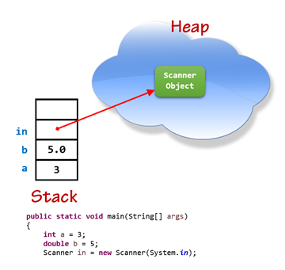

Stack vs. Heap
You're already familiar with dynamic memory, since that's what is used to create every object in Java. Writing new Scanner(System.in), allocates memory in the heap to store a new Scanner object as shown here.
In C++, however, it is not enough to allocate memory; you also have to free that memory when it is no longer needed. The process of doing this in a disciplined way is called manual memory management.
Allocating memory from the heap is common in programming. All the standard library collection classes use the heap to store their elements. In CS 250 and CS 200, you’ll have many opportunities to build your own versions of these collection classes. Before doing so, it is important to learn the underlying mechanics of dynamic allocation and how the process works.
 This course content is offered under a
CC
Attribution Non-Commercial license. Content in this course
can be considered under this license unless otherwise noted.
This course content is offered under a
CC
Attribution Non-Commercial license. Content in this course
can be considered under this license unless otherwise noted.